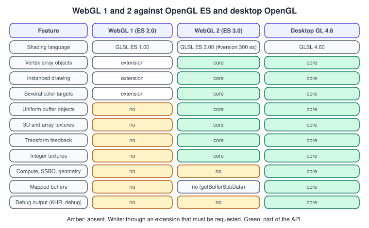
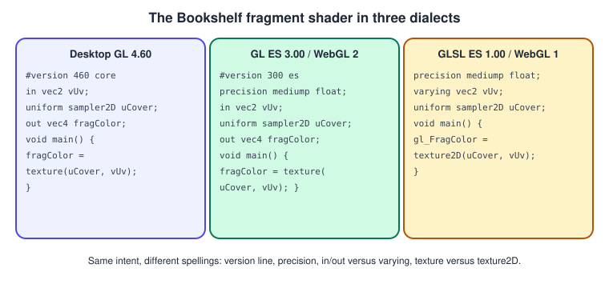

OpenGL and WebGL
|
This content was generated with the assistance of AI and should be verified against the official documentation before being relied on in production. |
WebGL is OpenGL ES for the browser. WebGL 1.0 is derived from OpenGL ES 2.0 and uses GLSL ES 1.00; WebGL 2.0 is derived from
OpenGL ES 3.0 and uses GLSL ES 3.00. If you know one API you know most of the other, but the differences are not trivial, and they are
the source of most porting surprises: object handles become JavaScript objects, pointers become typed arrays, mapped buffers disappear and
presentation is controlled by the browser rather than by eglSwapBuffers. This page maps the two families, shows the shader dialects side by side, gives a complete
WebGL 2 example of the Bookshelf book and a C++ program that targets the same API through Emscripten.
The facts were checked in November 2026 against the WebGL specifications and the Emscripten documentation. The versions
documented are WebGL 1.0 and 2.0 against OpenGL ES 3.2 and desktop OpenGL 4.6 as the reference points (WebGL itself has not adopted ES
3.1 or 3.2 features such as compute shaders). Requirements: a current browser with WebGL 2 enabled and, for the Emscripten part, the Emscripten SDK. Loading
the example from a local file runs into the browser’s cross-origin rules for images; serve the folder from a local web server, for example
python3 -m http.server.
This page is the OpenGL view of the topic. The browser side (the canvas element, the animation loop, Three.js) is covered in Canvas, WebGL & Three.js. The WebGL sub-section of this site teaches the API on its own terms; this page is for readers who already have OpenGL code or knowledge. Related concept pages: Shading Languages Landscape and Cross-Platform Translation Layers.
The version mapping

Reading the table:
-
WebGL 1 is ES 2.0. Features that ES 3.0 made core (vertex array objects, instancing, multiple color targets, depth textures, float textures) are available as extensions that you request with
gl.getExtension, if the browser and GPU offer them. Uniform buffers, 3D textures, integer textures and transform feedback are not available. -
WebGL 2 is ES 3.0. VAOs, instancing, uniform buffer objects, 3D and array textures, integer textures, transform feedback, sampler objects,
texStorage, multiple render targets, sync objects and occlusion queries are core. -
Neither has compute, shader storage buffers, geometry or tessellation shaders. Those exist in ES 3.1 and 3.2 and desktop OpenGL. A port from desktop OpenGL must replace them: compute with fragment-shader passes, transform feedback or a WebGPU compute pipeline.
-
Mapped buffers are not exposed. The WebGL 2 specification says that
MapBufferRange, in particular its read-only and write-only modes, cannot be exposed safely to JavaScript;getBufferSubDatareplaces it for reading data back. Uploads usebufferDataandbufferSubDatawith typed arrays. -
WebGL may diverge from ES where needed for interoperability or security. One example from the specification is that creating a multisampled depth-stencil renderbuffer is restricted. Trust the WebGL specification, not the ES one, when they differ.
What changes in the API
Most function names map by dropping the gl prefix and the type suffix, but several concepts are different on the web.
| OpenGL ES © | WebGL (JavaScript) | Difference |
|---|---|---|
|
|
Returns an opaque |
|
|
No raw pointers: you pass an |
|
|
Takes an array or |
|
|
Returns a |
|
none |
The browser presents the drawing buffer when your JavaScript task ends. There is nothing to call; |
|
|
Allowed, but it stalls the pipeline; prefer pixel buffer objects in WebGL 2. |
Window, context creation |
|
Context attributes ( |
Texture upload from a file |
|
Accepts an image, canvas or video element. The origin is top-left; |
Context loss on the GPU reset |
|
Equivalent of EGL context loss: re-create every GL object after restore, as on Android. |
Source: WebGL 2.0 Specification
Shader dialects: one idea, three spellings
A WebGL 2 shader is a GLSL ES 3.00 shader, which is close to desktop GLSL 3.30 and later. The differences from desktop GLSL 4.60 are the version line, the required precision
qualifier, and the absence of newer features. A WebGL 1 shader is GLSL ES 1.00, with attribute, varying and gl_FragColor. The same fragment
shader in each of the three dialects:

Practical rules:
-
In WebGL 2 the first line of the source must be
#version 300 es. A JavaScript template literal that begins with a newline before it fails to compile, with an error about the version directive. -
A fragment shader must declare a default precision for
float(precision mediump float;), because ES fragment shaders have none. Vertex shaders default tohighp. -
Use
inandoutin WebGL 2; keep a small preprocessor step if you share sources with desktop GL, as in GLSL ES and Portability. -
layout(binding = N)andlayout(std430)do not exist in ES 3.00; usegl.uniformBlockBindingand std140. -
Non-power-of-two textures are restricted in WebGL 1 (no mipmaps, clamp wrapping); WebGL 2 lifts the restriction.
A complete WebGL 2 example: the textured, rotating book
This HTML file is the web variant of the Bookshelf book quad used on the desktop and Android pages: the same interleaved vertex
layout, the same shader, the same projection. Place bookshelf-cover.png (from the Bookshelf textures,
bookshelf.glb ships with the model) next to it and serve the folder over HTTP.
<!doctype html>
<html lang="en">
<head>
<meta charset="utf-8">
<title>Bookshelf GL on WebGL 2</title>
<style>
html, body { margin: 0; background: #0d0d14; }
canvas { width: 100vw; height: 100vh; display: block; }
</style>
</head>
<body>
<canvas id="gl"></canvas>
<script type="module">
const canvas = document.getElementById("gl");
const gl = canvas.getContext("webgl2", { antialias: true });
if (!gl) throw new Error("WebGL 2 is not available");
canvas.addEventListener("webglcontextlost", (event) => event.preventDefault());
const vertexSource = `#version 300 es
layout(location = 0) in vec3 aPosition;
layout(location = 1) in vec2 aUv;
uniform mat4 uMvp;
out vec2 vUv;
void main() {
vUv = aUv;
gl_Position = uMvp * vec4(aPosition, 1.0);
}`;
const fragmentSource = `#version 300 es
precision mediump float;
in vec2 vUv;
uniform sampler2D uCover;
out vec4 fragColor;
void main() {
fragColor = texture(uCover, vUv);
}`;
function compile(type, source) {
const shader = gl.createShader(type);
gl.shaderSource(shader, source);
gl.compileShader(shader);
if (!gl.getShaderParameter(shader, gl.COMPILE_STATUS)) {
throw new Error(gl.getShaderInfoLog(shader));
}
return shader;
}
const program = gl.createProgram();
gl.attachShader(program, compile(gl.VERTEX_SHADER, vertexSource));
gl.attachShader(program, compile(gl.FRAGMENT_SHADER, fragmentSource));
gl.linkProgram(program);
if (!gl.getProgramParameter(program, gl.LINK_STATUS)) {
throw new Error(gl.getProgramInfoLog(program));
}
const mvpLocation = gl.getUniformLocation(program, "uMvp");
// Interleaved position (3 floats) and uv (2 floats): stride 20 bytes, uv at offset 12.
const vertices = new Float32Array([
-0.5, -0.75, 0, 0, 0,
0.5, -0.75, 0, 1, 0,
-0.5, 0.75, 0, 0, 1,
0.5, 0.75, 0, 1, 1,
]);
const vao = gl.createVertexArray();
gl.bindVertexArray(vao);
const buffer = gl.createBuffer();
gl.bindBuffer(gl.ARRAY_BUFFER, buffer);
gl.bufferData(gl.ARRAY_BUFFER, vertices, gl.STATIC_DRAW);
gl.enableVertexAttribArray(0);
gl.vertexAttribPointer(0, 3, gl.FLOAT, false, 20, 0);
gl.enableVertexAttribArray(1);
gl.vertexAttribPointer(1, 2, gl.FLOAT, false, 20, 12);
gl.bindVertexArray(null);
const texture = gl.createTexture();
const image = new Image();
image.onload = () => {
gl.bindTexture(gl.TEXTURE_2D, texture);
gl.pixelStorei(gl.UNPACK_FLIP_Y_WEBGL, true); // image origin is top-left
gl.texImage2D(gl.TEXTURE_2D, 0, gl.RGBA, gl.RGBA, gl.UNSIGNED_BYTE, image);
gl.generateMipmap(gl.TEXTURE_2D);
gl.texParameteri(gl.TEXTURE_2D, gl.TEXTURE_MIN_FILTER, gl.LINEAR_MIPMAP_LINEAR);
gl.texParameteri(gl.TEXTURE_2D, gl.TEXTURE_MAG_FILTER, gl.LINEAR);
gl.texParameteri(gl.TEXTURE_2D, gl.TEXTURE_WRAP_S, gl.CLAMP_TO_EDGE);
gl.texParameteri(gl.TEXTURE_2D, gl.TEXTURE_WRAP_T, gl.CLAMP_TO_EDGE);
requestAnimationFrame(frame);
};
image.src = "bookshelf-cover.png";
// Column-major 4x4 helpers, the same layout GLM and OpenGL use.
function perspective(fovY, aspect, near, far) {
const f = 1 / Math.tan(fovY / 2);
return [f / aspect, 0, 0, 0, 0, f, 0, 0, 0, 0, (far + near) / (near - far), -1,
0, 0, (2 * far * near) / (near - far), 0];
}
function rotationY(angle) {
const c = Math.cos(angle), s = Math.sin(angle);
return [c, 0, -s, 0, 0, 1, 0, 0, s, 0, c, 0, 0, 0, 0, 1];
}
function translationZ(z) {
return [1, 0, 0, 0, 0, 1, 0, 0, 0, 0, 1, 0, 0, 0, z, 1];
}
function multiply(a, b) {
const out = new Array(16).fill(0);
for (let col = 0; col < 4; col++)
for (let row = 0; row < 4; row++)
for (let k = 0; k < 4; k++) out[col * 4 + row] += a[k * 4 + row] * b[col * 4 + k];
return out;
}
function frame(timeMs) {
const scale = window.devicePixelRatio || 1;
const width = Math.floor(canvas.clientWidth * scale);
const height = Math.floor(canvas.clientHeight * scale);
if (canvas.width !== width || canvas.height !== height) {
canvas.width = width;
canvas.height = height;
}
gl.viewport(0, 0, width, height);
gl.clearColor(0.05, 0.05, 0.08, 1);
gl.clear(gl.COLOR_BUFFER_BIT | gl.DEPTH_BUFFER_BIT);
gl.enable(gl.DEPTH_TEST);
const projection = perspective(Math.PI / 4, width / height, 0.1, 10);
const model = multiply(translationZ(-3), rotationY(timeMs * 0.001));
const mvp = multiply(projection, model);
gl.useProgram(program);
gl.uniformMatrix4fv(mvpLocation, false, mvp);
gl.activeTexture(gl.TEXTURE0);
gl.bindTexture(gl.TEXTURE_2D, texture);
gl.bindVertexArray(vao);
gl.drawArrays(gl.TRIANGLE_STRIP, 0, 4);
requestAnimationFrame(frame);
}
</script>
</body>
</html>Compared with the Android listing, the differences are the ones in the table: objects instead of integers, typed arrays instead of direct
buffers, no swap call, a webglcontextlost handler instead of lifecycle callbacks, and the texture flip done by a pixel-store parameter rather than by flipping the V
coordinates.
Porting a C++ OpenGL ES program with Emscripten
Existing OpenGL ES 3.0 code in C++ can run in the browser by compiling it with Emscripten, which maps GLES calls to WebGL calls. The default mode is a
WebGL subset: it uses the ES 2.0 style API and does not support client-side arrays unless you opt in with the -sFULL_ES2 flag (or -sFULL_ES3 for the memory-mapping
emulation). The flag -sMAX_WEBGL_VERSION=2 enables WebGL 2 contexts, and combining it with -sMIN_WEBGL_VERSION=2 drops the WebGL 1 code to save size.
The legacy emulation -sLEGACY_GL_EMULATION exists for desktop GL 1.x immediate mode code, and Emscripten documents it as incomplete; do not plan on it for new code.
// triangle_web.cpp: an OpenGL ES 3.0 triangle in the browser with Emscripten.
#include <GLES3/gl3.h>
#include <emscripten.h>
#include <emscripten/html5.h>
#include <cstdio>
static const char* kVertex = R"(#version 300 es
const vec2 kPositions[3] = vec2[3](vec2(-0.6, -0.5), vec2(0.6, -0.5), vec2(0.0, 0.6));
void main() { gl_Position = vec4(kPositions[gl_VertexID], 0.0, 1.0); }
)";
static const char* kFragment = R"(#version 300 es
precision mediump float;
out vec4 fragColor;
void main() { fragColor = vec4(0.85, 0.55, 0.2, 1.0); }
)";
static GLuint gProgram = 0;
static GLuint compile(GLenum type, const char* source) {
GLuint shader = glCreateShader(type);
glShaderSource(shader, 1, &source, nullptr);
glCompileShader(shader);
GLint ok = 0;
glGetShaderiv(shader, GL_COMPILE_STATUS, &ok);
if (!ok) {
char log[512];
glGetShaderInfoLog(shader, sizeof log, nullptr, log);
std::printf("shader: %s\n", log);
}
return shader;
}
static void frame() {
glClearColor(0.05f, 0.05f, 0.08f, 1.0f);
glClear(GL_COLOR_BUFFER_BIT);
glUseProgram(gProgram);
glDrawArrays(GL_TRIANGLES, 0, 3);
// No swap call: the browser presents the drawing buffer after this callback returns.
}
int main() {
EmscriptenWebGLContextAttributes attributes;
emscripten_webgl_init_context_attributes(&attributes);
attributes.majorVersion = 2; // a WebGL 2 context (OpenGL ES 3.0)
EMSCRIPTEN_WEBGL_CONTEXT_HANDLE context = emscripten_webgl_create_context("#canvas", &attributes);
if (context <= 0) { std::printf("no WebGL 2\n"); return 1; }
emscripten_webgl_make_context_current(context);
gProgram = glCreateProgram();
glAttachShader(gProgram, compile(GL_VERTEX_SHADER, kVertex));
glAttachShader(gProgram, compile(GL_FRAGMENT_SHADER, kFragment));
glLinkProgram(gProgram);
emscripten_set_main_loop(frame, 0, 1); // 0 = use requestAnimationFrame
return 0;
}cmake_minimum_required(VERSION 3.22)
project(triangle_web LANGUAGES CXX)
set(CMAKE_CXX_STANDARD 20)
add_executable(triangle_web triangle_web.cpp)
set_target_properties(triangle_web PROPERTIES SUFFIX ".html")
target_link_options(triangle_web PRIVATE -sMIN_WEBGL_VERSION=2 -sMAX_WEBGL_VERSION=2)Configure and build with emcmake cmake -S . -B build and cmake --build build, then serve build over HTTP and open triangle_web.html.
Source: Emscripten: Building projects
The same porting question in a diagram:
Where WebGL and OpenGL meet: ANGLE
The OpenGL ES implementation that gives browsers a portable GL on platforms whose native API is not OpenGL is ANGLE, originally built for Chromium. ANGLE implements OpenGL ES (and EGL 1.5) on top of other graphics APIs, with backends that include Vulkan and Metal. It is the same project that Android is adopting for its GLES driver stack, which is why code that is clean ES 3.0 tends to survive moving between the browser, Android and Apple platforms. See OpenGL ES on Android and OpenGL ES on iOS and macOS.
Source: ANGLE
The WebGL sub-section covers WebGL 2, three.js and WebGPU in depth.
Common mistakes
-
Leading whitespace before
#version 300 es. A template literal that starts with a newline gives a compile error. Start the string on the same line as the backtick. -
Using desktop GLSL.
#version 330 core,layout(binding = 0)andtexture2Din a WebGL 2 shader all fail; the WebGL 1 spelling is not valid in WebGL 2 either. -
Forgetting the fragment precision. The error mentions the missing default precision.
-
Calling
getExtensionfor core features in WebGL 2. VAOs and instancing are core; ask for extensions only for things such as float color attachments or compressed texture formats. -
Expecting a swap call or a blocking frame. Rendering is asynchronous with the browser; use
requestAnimationFrame. -
Reading the drawing buffer outside the frame. After presentation the buffer is cleared unless
preserveDrawingBufferis set; read pixels in the same task. -
Not handling context loss. The GPU can reset; listen for
webglcontextlostand rebuild onwebglcontextrestored. -
Texture upside down. Image origin is top-left; flip on upload or flip the V coordinate.
What older guides get wrong today
| Older guide says | Today |
|---|---|
ES 2.0 is the modern mobile and web API. |
WebGL 2 (ES 3.0) is the baseline for new web work; ES 2.0 knowledge maps to WebGL 1. |
Use an emulator (PowerVR, AMD) to try ES 2.0 on a PC. |
Run it in a browser as WebGL, or on ANGLE or Mesa natively. |
Windows or Mac desktop GL code cannot run on the web. |
It can often be ported through Emscripten if it stays within ES 3.0, or redesigned for WebGL 2; compute-heavy code belongs on WebGPU. |